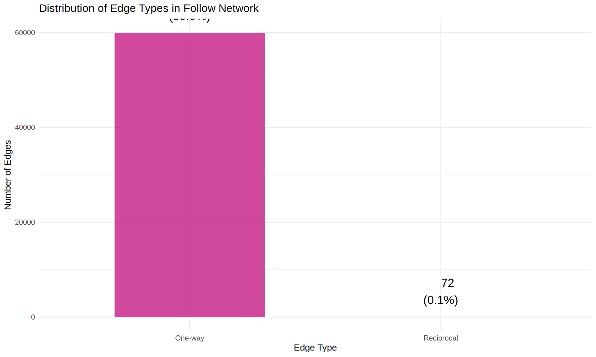
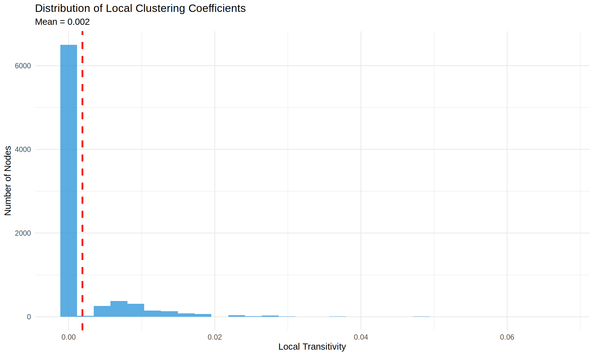
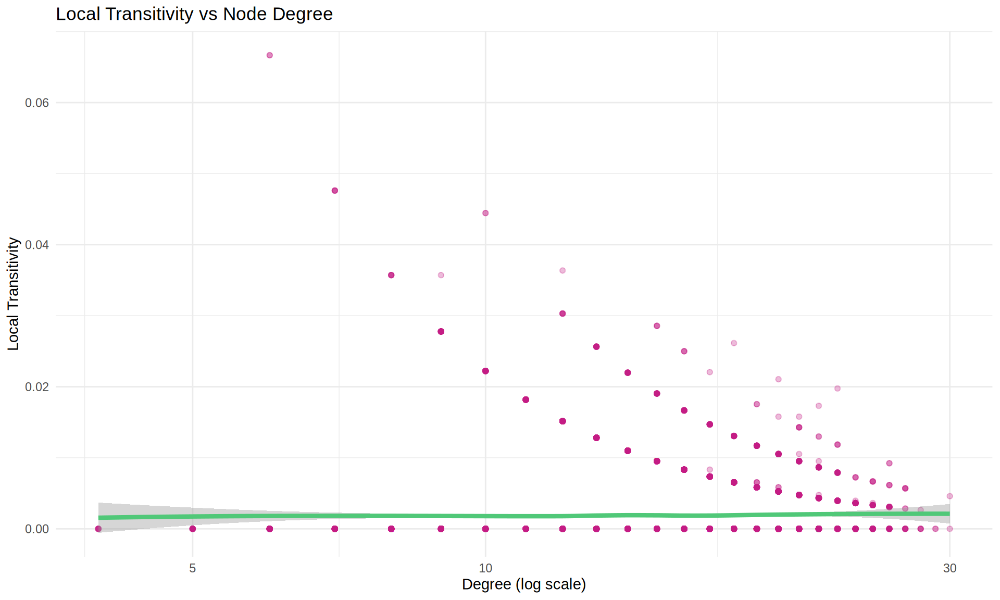

# Load required libraries
library(tidyverse)
library(igraph)
library(knitr)
library(gridExtra)
library(sna) # For CUG tests
library(network) # For network objects (required by sna)
library(intergraph) # For converting between igraph and network objects
# Note: sna and igraph have some function name conflicts (e.g., degree, betweenness)
# When needed, we use igraph:: prefix to specify which package's function to use
# Set theme for plots
theme_set(theme_minimal())
# Configure output options
opts_chunk$set(
echo = TRUE,
message = FALSE,
warning = FALSE,
fig.width = 10,
fig.height = 6
)
# Disable httpgd for compatibility
options(vsc.use_httpgd = FALSE)SoundCloud Network Properties Analysis
Week 5 - Testing Reciprocity and Transitivity
Overview
This analysis examines two fundamental network properties in the SoundCloud follow network:
- Reciprocity: The tendency for users to follow each other mutually (if A follows B, does B follow A?)
- Transitivity (Clustering): The tendency for users to form triangles (if A follows B and B follows C, does A follow C?)
These properties help us understand the social structure and relationship patterns in the SoundCloud community.
Setup and Data Loading
# Set data path
data_path <- "../../../data/soundcloud/output/"
# Load follow network data
follows <- read_csv(paste0(data_path, "follows.csv"), show_col_types = FALSE)
users <- read_csv(paste0(data_path, "users.csv"), show_col_types = FALSE)
cat("Data loaded successfully!\n")Data loaded successfully!cat("Follow edges:", nrow(follows), "\n")Follow edges: 60000 cat("Unique users:", n_distinct(c(follows$follower_id, follows$followee_id)), "\n")Unique users: 8000 Network Construction
# Create directed graph from edge list
g <- graph_from_data_frame(
d = follows[, c("follower_id", "followee_id")],
directed = TRUE,
vertices = NULL
)
# Network summary
cat("\n=== Network Summary ===\n")
=== Network Summary ===cat("Nodes (users):", vcount(g), "\n")Nodes (users): 8000 cat("Edges (follows):", ecount(g), "\n")Edges (follows): 60000 cat("Density:", round(edge_density(g), 5), "\n")Density: 0.00094 cat("Is directed:", is_directed(g), "\n")Is directed: TRUE cat("Is connected:", is_connected(g, mode = "weak"), "\n")Is connected: TRUE Reciprocity Analysis
Reciprocity measures the proportion of mutual connections in a directed network. A high reciprocity indicates that when user A follows user B, B is likely to follow A back.
Calculate Reciprocity
# Calculate reciprocity using different methods
recip_default <- reciprocity(g)
recip_ratio <- reciprocity(g, mode = "ratio")
cat("\n=== Reciprocity Measures ===\n\n")
=== Reciprocity Measures ===cat("Reciprocity (default):", round(recip_default, 4), "\n")Reciprocity (default): 0.0012 cat(" → Proportion of mutual edges among all edges\n\n") → Proportion of mutual edges among all edgescat("Reciprocity (ratio):", round(recip_ratio, 4), "\n")Reciprocity (ratio): 6e-04 cat(" → Proportion of reciprocated edges\n\n") → Proportion of reciprocated edges# Calculate manually for verification
edges_df <- as_data_frame(g, what = "edges")
edges_df$edge_pair <- paste(
pmin(edges_df$from, edges_df$to),
pmax(edges_df$from, edges_df$to),
sep = "_"
)
# Count mutual edges
mutual_pairs <- edges_df %>%
count(edge_pair) %>%
filter(n == 2) %>%
nrow()
total_edges <- ecount(g)
manual_reciprocity <- (2 * mutual_pairs) / total_edges
cat("Manual calculation:", round(manual_reciprocity, 4), "\n")Manual calculation: 0.0012 cat(" → Mutual pairs:", mutual_pairs, "\n") → Mutual pairs: 36 cat(" → Total edges:", total_edges, "\n") → Total edges: 60000 Reciprocity Interpretation
# Create interpretation dataframe
interpretation <- data.frame(
Metric = c("Total Edges", "Mutual Pairs", "Reciprocity Rate", "Interpretation"),
Value = c(
format(total_edges, big.mark = ","),
format(mutual_pairs, big.mark = ","),
paste0(round(recip_default * 100, 2), "%"),
ifelse(recip_default > 0.3, "High reciprocity",
ifelse(recip_default > 0.1, "Moderate reciprocity", "Low reciprocity"))
)
)
kable(interpretation, caption = "Reciprocity Summary")| Metric | Value |
|---|---|
| Total Edges | 60,000 |
| Mutual Pairs | 36 |
| Reciprocity Rate | 0.12% |
| Interpretation | Low reciprocity |
Visualize Reciprocal Relationships
# Classify edges as reciprocal or not
edge_types <- edges_df %>%
group_by(edge_pair) %>%
summarise(
edge_count = n(),
.groups = "drop"
) %>%
mutate(
type = ifelse(edge_count == 2, "Reciprocal", "One-way")
)
# Count edge types
edge_type_summary <- edge_types %>%
count(type) %>%
mutate(
percentage = round(n / sum(n) * 100, 1),
edges_count = ifelse(type == "Reciprocal", n * 2, n)
)
# Create visualization
ggplot(edge_type_summary, aes(x = type, y = edges_count, fill = type)) +
geom_col(alpha = 0.8, width = 0.6) +
geom_text(
aes(label = paste0(format(edges_count, big.mark = ","), "\n(",
round(edges_count/total_edges*100, 1), "%)")),
vjust = -0.5,
size = 5
) +
scale_fill_manual(values = c("Reciprocal" = "#50C878", "One-way" = "#c41c85")) +
labs(
title = "Distribution of Edge Types in Follow Network",
x = "Edge Type",
y = "Number of Edges",
fill = "Type"
) +
theme_minimal() +
theme(legend.position = "none")
Transitivity Analysis
Transitivity (also called clustering coefficient) measures the probability that two neighbors of a node are also connected to each other. It quantifies the tendency to form triangles in the network.
Calculate Transitivity
# Global transitivity (clustering coefficient)
trans_global <- transitivity(g, type = "global")
trans_global_undirected <- transitivity(as.undirected(g, mode = "collapse"), type = "global")
# Average local transitivity
trans_local_avg <- transitivity(g, type = "average")
# Weighted transitivity (considers edge weights if present)
trans_weighted <- transitivity(g, type = "weighted")
cat("\n=== Transitivity Measures ===\n\n")
=== Transitivity Measures ===cat("Global transitivity (directed):", round(trans_global, 4), "\n")Global transitivity (directed): 0.0019 cat(" → Proportion of closed triplets (triangles) in the network\n\n") → Proportion of closed triplets (triangles) in the networkcat("Global transitivity (undirected):", round(trans_global_undirected, 4), "\n")Global transitivity (undirected): 0.0019 cat(" → Ignoring edge direction\n\n") → Ignoring edge directioncat("Average local transitivity:", round(trans_local_avg, 4), "\n")Average local transitivity: 0.0019 cat(" → Average clustering coefficient across all nodes\n\n") → Average clustering coefficient across all nodescat("Weighted transitivity:", round(trans_weighted, 4), "\n")Weighted transitivity: 0 0.0058 0 0 0 0.025 0 0 0 0 0 0.011 0 0 0.0095 0 0 0 0 0 0 0 0 0 0 0.0053 0 0 0 0 0 0.0131 0 0 0 0.0152 0 0.0278 0 0 0 0 0 0 0 0 0 0 0 0.011 0 0 0 0 0 0 0 0.0095 0 0 0 0 0 0 0 0.011 0 0.0128 0 0 0.0043 0 0 0 0 0 0.0065 0 0.0043 0 0 0.011 0 0 0 0.0053 0 0.0173 0 0 0 0 0 0.0222 0.011 0 0.0095 0 0 0 0 0 0 0 0.0152 0 0 0 0.0131 0.0065 0.0083 0 0 0 0 0 0 0 0 0 0 0.0065 0 0 0.011 0 0 0 0 0 0 0.0048 0 0 0 0 0 0 0 0 0.0095 0 0 0.0036 0 0 0 0 0 0 0 0.0065 0.0058 0 0 0 0.011 0 0 0.0083 0 0 0 0.0182 0.0053 0 0.011 0 0 0 0 0 0 0 0 0 0 0 0 0 0.0065 0.0065 0 0.004 0 0 0 0 0 0 0 0 0 0 0 0 0 0 0.011 0 0 0 0 0 0 0.0058 0.0074 0 0.0048 0 0 0 0 0 0 0 0 0.0053 0.0058 0 0 0 0 0.0147 0 0 0.0128 0.0083 0.0222 0 0 0.0043 0 0 0.0048 0.0105 0.0083 0 0 0 0 0 0 0.0074 0.0058 0 0.0083 0 0 0.0105 0.0048 0 0 0 0 0 0 0.0053 0 0 0 0.0182 0.0131 0 0.0083 0 0 0.0222 0 0 0 0 0 0 0 0.0083 0.0074 0 0 0 0 0 0 0 0 0 0 0 0 0 0 0 0.011 0.0053 0 0 0 0 0 0 0 0 0 0 0 0 0 0 0 0 0 0 0 0 0 0 0 0 0.0065 0 0 0 0 0 0 0.0083 0 0 0 0.0128 0 0 0.0083 0 0 0 0 0 0 0 0 0 0 0 0.0053 0.0048 0 0.0058 0 0 0 0 0 0 0 0 0 0 0 0 0 0.0083 0 0 0 0.004 0 0.0058 0 0 0.0043 0.0095 0 0 0 0 0 0 0.0152 0 0 0 0 0 0 0 0 0 0 0.0053 0 0 0.0131 0 0 0 0 0 0 0.0065 0 0 0 0 0 0.0074 0 0 0 0 0 0 0 0.0065 0.0083 0.011 0 0 0 0.0083 0 0 0 0.0095 0 0 0 0 0.0083 0 0 0 0 0.0058 0 0.0128 0 0 0 0.0095 0 0.0083 0 0.0182 0 0 0 0 0 0 0 0.0058 0.0083 0 0 0 0 0 0 0 0 0 0.0095 0 0.0033 0.0058 0 0 0 0 0 0 0 0 0.0128 0 0 0 0 0.0074 0 0 0 0 0 0 0 0 0 0 0.019 0 0 0.0053 0 0 0.004 0 0 0 0 0 0 0 0 0 0 0 0 0 0 0 0.0065 0 0 0.0095 0.0067 0 0 0 0 0 0 0 0 0 0 0.0095 0 0.0182 0 0.0074 0 0.0128 0 0.0048 0 0 0 0 0 0 0 0 0.0048 0.0043 0 0 0 0 0.0095 0 0 0 0 0 0.0065 0 0 0 0 0 0 0 0 0 0 0 0.0131 0 0.0074 0 0 0 0 0 0 0 0 0.0043 0 0 0 0 0 0 0 0.0065 0 0 0 0.0058 0 0 0 0 0 0 0 0.0303 0 0 0 0 0 0 0 0 0 0 0 0 0 0 0 0 0 0 0 0 0 0 0.0065 0 0 0 0 0 0.013 0.0074 0 0 0 0 0 0 0 0 0 0 0 0 0 0.0128 0 0 0 0.0053 0.0083 0.0128 0 0 0 0 0 0 0.0083 0.0058 0 0 0 0 0 0 0.0048 0 0.0053 0 0 0 0 0 0 0.0053 0 0 0 0 0 0.0065 0 0 0 0 0.0053 0 0 0 0 0 0 0.011 0 0 0 0 0 0 0.0065 0 0 0.0058 0 0 0 0 0.0095 0 0 0 0 0 0.011 0 0 0.0058 0 0.0074 0 0 0 0 0 0 0 0 0 0 0 0 0.004 0 0 0 0.0083 0 0 0 0 0 0 0 0 0 0 0 0 0 0 0.0065 0 0 0 0.0128 0 0 0 0 0.0058 0 0 0 0 0 0 0 0.0083 0.0074 0 0 0.0152 0 0 0.0065 0 0 0 0 0 0 0 0 0 0 0 0 0.0095 0 0 0 0 0 0 0 0 0 0 0 0.0058 0 0 0 0 0 0 0 0 0.0364 0.0128 0 0 0 0 0 0 0 0 0 0 0 0 0 0 0 0.0152 0 0 0 0.0062 0 0 0 0 0 0.0074 0 0 0 0.0065 0.0062 0 0 0.0117 0 0 0.0065 0 0.0074 0 0 0.0074 0 0 0 0 0.0303 0 0.0036 0.0083 0 0 0 0 0 0 0.0065 0.0058 0.0053 0.0128 0 0 0 0 0 0 0 0 0 0 0 0 0.0083 0 0 0 0 0 0 0.0083 0 0 0 0 0 0 0 0 0 0.0074 0.0095 0 0.0083 0 0 0.0065 0 0 0.0053 0 0 0 0 0 0.0053 0 0 0 0.0083 0.0053 0.0065 0 0 0 0 0 0 0 0 0 0 0 0 0 0 0.0057 0 0 0 0 0 0 0.0152 0 0 0 0 0 0 0 0 0 0 0 0.0083 0 0.0067 0 0 0 0 0 0 0 0 0.0053 0.0065 0 0 0.011 0 0 0 0 0 0 0 0 0 0 0 0 0.0048 0 0.011 0.0128 0 0 0 0.011 0 0 0.0083 0 0 0 0 0 0 0 0 0 0 0.0117 0 0 0 0.0058 0 0.0095 0 0.022 0 0 0 0.0065 0 0 0 0 0 0 0 0 0 0 0 0 0 0 0.0058 0 0 0 0.0048 0 0 0 0 0 0 0 0.0128 0 0.004 0 0 0 0.004 0 0.0043 0.0131 0 0.0278 0 0 0 0.0095 0 0 0 0.0053 0 0.0095 0 0 0 0 0 0.0036 0 0 0.0043 0 0 0 0 0 0 0 0.0095 0 0 0 0 0 0.0053 0 0.0036 0 0 0 0 0 0 0.0095 0 0 0 0 0 0.0256 0 0 0 0.0167 0 0 0.0079 0.0048 0.0053 0 0 0 0 0 0 0 0.0053 0 0 0 0.0065 0 0 0.0087 0.0128 0 0 0 0 0 0 0 0.0053 0 0.0074 0 0 0 0 0.0105 0 0 0.0058 0.011 0.0105 0.011 0 0.0065 0 0 0.0083 0 0.0065 0 0 0 0 0 0 0 0 0 0 0 0 0 0.0182 0 0 0 0 0 0 0 0 0.0087 0.0058 0.0143 0.0065 0.019 0 0 0 0 0 0 0.0095 0 0 0 0 0.0083 0 0 0 0.011 0 0.0128 0 0.0065 0.0105 0 0 0.0074 0 0 0.0152 0 0 0 0 0 0.0065 0 0 0 0.0167 0 0.0074 0 0 0 0.0083 0 0 0.0128 0.0053 0 0 0 0 0 0 0 0 0 0 0.004 0 0 0.0065 0 0 0 0 0 0 0 0 0.0083 0 0 0 0 0 0.0033 0.0065 0.0053 0 0.0131 0 0 0 0 0 0.0048 0.011 0 0 0.0065 0 0 0 0.0083 0 0 0 0 0 0 0.0117 0 0 0 0 0 0 0.0043 0 0.011 0 0 0 0 0.011 0 0 0 0 0.0128 0.0053 0 0 0 0 0 0 0.011 0.0105 0 0 0.0065 0.0211 0 0 0 0 0 0 0 0 0 0 0 0.0058 0.0058 0.0444 0 0 0 0 0.011 0 0 0 0 0 0 0.0074 0 0 0.0128 0 0.0058 0.0131 0 0.0065 0 0 0 0 0 0 0.0074 0 0 0 0 0 0 0 0.0043 0 0 0 0 0 0.0083 0.0053 0.0074 0 0 0 0 0 0 0 0 0 0 0 0.0065 0 0.0117 0 0 0 0 0 0 0 0 0 0 0 0 0.0128 0 0 0 0 0 0 0 0 0.0095 0.0074 0 0 0.0278 0 0 0 0 0 0 0 0 0 0 0 0 0 0.0095 0.0074 0 0.0053 0.0083 0 0 0.0182 0.0058 0.0079 0 0 0 0 0 0 0 0 0 0 0 0 0 0 0 0 0.0083 0 0 0 0 0 0.0095 0 0 0.019 0 0 0 0 0 0 0.0095 0 0 0 0.0074 0 0 0.0095 0 0 0 0 0 0.0065 0.0048 0 0 0 0 0 0 0 0 0 0 0 0 0.0083 0.0083 0 0.0043 0 0 0 0 0.0053 0 0 0 0 0.0087 0 0 0 0 0 0.0065 0 0.0074 0 0 0 0 0 0.0083 0.011 0 0 0 0.0053 0 0 0 0 0 0 0 0 0 0 0 0 0 0 0 0 0 0 0 0 0 0 0 0 0 0 0.0095 0 0 0 0 0 0.0043 0 0 0 0 0 0.0033 0.0152 0 0 0.0043 0 0 0 0.0031 0 0 0 0 0 0 0 0 0 0.0128 0.0074 0.0048 0 0 0.0065 0 0 0 0 0.0117 0 0 0.0143 0 0 0.0083 0 0 0 0 0 0 0 0 0 0 0 0 0 0.0256 0.0043 0.0128 0 0 0.0031 0 0.0083 0 0 0 0 0 0 0 0 0 0.0065 0 0 0 0.0053 0 0 0 0 0 0.011 0 0 0 0.0053 0 0 0.0053 0 0 0 0 0 0 0 0 0 0.0074 0 0.0083 0.0095 0 0 0 0 0 0.0065 0 0.0058 0 0.0182 0 0 0 0 0.0058 0 0.0152 0 0.0152 0 0 0.011 0.0048 0 0.0095 0.0117 0 0.0128 0 0.0167 0 0 0 0.0072 0 0 0 0.0074 0.0128 0 0 0 0.0083 0 0 0.0083 0 0 0 0 0.0083 0 0 0.0092 0 0 0.0065 0 0 0 0 0 0 0 0 0 0.0131 0 0 0 0.0083 0 0 0 0 0 0 0 0 0 0 0 0 0 0 0 0.0048 0 0 0 0 0.0058 0 0 0 0 0.004 0 0 0.0095 0 0.011 0 0 0 0.0074 0 0 0.0053 0 0 0.0083 0 0 0 0 0.0065 0.0128 0 0 0.0058 0 0.011 0 0 0 0 0 0 0 0.0065 0 0 0.0053 0 0 0 0 0.022 0 0 0 0.0058 0.022 0 0.0128 0.0053 0 0 0 0 0.0128 0 0 0 0.0065 0 0.0048 0.0074 0 0 0.011 0 0 0 0 0 0.0065 0.0053 0 0 0 0 0 0 0 0 0 0.0222 0 0 0.0083 0 0 0 0 0.0083 0.0476 0 0 0 0 0.0048 0 0 0 0 0 0 0 0 0.0095 0 0.0058 0 0.0074 0 0 0 0.0095 0 0 0.0065 0 0 0 0 0 0 0 0 0 0 0 0 0 0 0 0.0065 0 0 0.011 0.0048 0 0 0 0 0 0.0095 0 0 0.0058 0 0 0 0.0065 0 0.0074 0 0 0 0 0 0 0 0.0043 0 0 0 0 0 0 0 0.0053 0 0.0083 0 0 0 0 0 0 0 0 0 0.011 0.0128 0 0 0 0 0 0 0 0.0079 0 0 0 0 0 0 0.0058 0 0 0 0 0 0 0 0 0 0 0 0 0 0.0043 0 0 0.0095 0 0 0.0131 0 0.0095 0 0.0095 0 0 0 0.0053 0.0065 0.011 0 0 0 0.0033 0 0 0.0074 0 0 0 0 0.0058 0.0074 0.0095 0 0.0048 0 0 0 0 0 0 0 0 0 0 0 0.0128 0.0079 0 0 0 0.0182 0 0.0053 0 0 0 0 0 0 0 0.011 0 0 0 0.0131 0 0.025 0.0286 0 0 0 0.0128 0 0.0095 0 0 0 0 0 0 0 0 0.0043 0 0 0.0043 0 0 0 0 0 0 0.0057 0 0 0 0 0 0 0 0 0 0.0167 0 0 0 0 0 0 0.0095 0 0 0 0.0053 0.0083 0 0 0 0 0 0 0 0 0 0 0.0065 0 0 0 0.0043 0.0028 0 0.019 0 0.0074 0 0 0 0.0095 0 0 0 0 0 0 0 0 0 0 0.0074 0 0 0 0 0 0 0 0 0 0 0 0 0 0 0 0 0 0 0 0.0074 0 0 0 0 0.011 0 0 0.0058 0 0 0 0 0 0 0.0036 0 0 0 0 0 0 0 0 0 0 0 0 0 0 0 0 0 0 0 0 0 0 0.0074 0 0.0031 0 0 0 0.0074 0.0058 0 0 0 0 0 0 0 0 0 0 0 0 0.0128 0 0 0 0 0 0.0083 0 0 0.0058 0 0 0.0074 0.0053 0.0048 0.0095 0 0 0 0.0083 0 0.0095 0.0083 0 0 0 0 0.0074 0 0.0074 0 0 0 0 0 0 0.0222 0.0158 0 0 0.0053 0 0 0 0 0 0 0 0.0152 0 0.0048 0 0.0065 0 0 0 0 0 0.0053 0 0 0 0 0.0058 0 0 0 0 0 0.0058 0 0 0 0 0.0074 0 0 0 0 0 0 0 0 0.0083 0 0 0 0 0 0 0 0 0.0256 0 0 0 0 0 0 0.0053 0 0 0.0053 0 0 0 0 0 0.0053 0 0 0 0 0 0.0083 0 0 0.011 0.0058 0.0036 0 0 0 0.0256 0.0074 0 0 0 0.0095 0 0 0 0 0 0.0074 0 0 0 0 0 0.0079 0 0.0031 0.0031 0 0 0 0 0.0079 0.0048 0 0 0.004 0 0 0 0.0074 0 0 0.0095 0 0 0 0.0278 0 0 0 0 0 0 0 0 0 0.0043 0 0 0 0 0 0 0 0 0.0058 0 0.0079 0 0 0.0074 0 0 0 0.0221 0.0152 0 0 0 0 0.0083 0 0 0.0028 0 0.0043 0 0 0 0.0053 0 0 0 0 0 0 0.0058 0 0 0.0074 0 0 0 0.0058 0.0048 0 0 0.0058 0 0 0 0 0 0.0152 0 0 0.0152 0 0 0 0 0 0 0 0.0065 0 0 0 0 0 0 0.004 0.0095 0.0074 0 0 0 0 0 0 0 0 0 0 0 0.0131 0 0 0 0 0 0 0 0 0.0256 0 0.0167 0.0128 0 0 0 0 0 0.0058 0 0 0 0 0.0105 0 0 0 0 0 0 0 0.0043 0 0.0083 0 0 0 0.0048 0 0 0 0 0.0095 0 0 0 0 0.011 0 0.0058 0 0 0 0.0053 0 0 0 0 0 0 0.0083 0 0 0 0 0 0 0 0.004 0 0.0074 0 0 0 0 0.0058 0 0 0 0 0 0 0.0065 0.0058 0 0 0 0 0 0 0.0053 0 0 0 0 0 0 0 0 0 0 0 0 0.0065 0 0 0 0 0 0 0 0.0152 0 0 0 0 0 0 0 0 0 0 0 0 0.0286 0 0 0 0 0 0 0 0 0 0 0 0 0.0065 0 0 0 0 0.0065 0 0 0.0048 0 0 0 0 0 0 0 0.0036 0 0 0 0.0083 0 0 0 0 0 0 0 0 0 0 0 0 0 0.0083 0 0 0 0 0.0053 0.0128 0 0 0.0053 0.0083 0 0 0 0 0 0 0 0 0 0 0 0 0 0 0 0 0 0 0 0 0.0147 0 0 0 0 0 0 0 0.0074 0.0095 0 0 0.0053 0 0 0 0 0 0 0 0 0 0.0152 0 0 0 0.0031 0 0 0 0.0072 0 0 0 0 0.0074 0.0147 0 0 0 0 0 0 0.011 0 0 0 0 0 0 0 0 0 0 0.0058 0 0 0 0 0 0 0 0 0 0.0095 0 0 0 0.011 0 0 0.0053 0 0 0 0 0 0 0.0048 0 0 0 0 0 0 0.0152 0 0.0222 0 0 0 0 0 0 0 0 0.0065 0 0 0 0 0 0 0.0119 0 0.0065 0 0.0261 0 0 0 0 0 0.0065 0 0 0 0.0083 0 0 0 0 0 0 0 0.0117 0 0 0.0048 0 0 0 0 0 0 0 0.011 0 0 0 0 0 0 0 0 0 0 0 0 0.0182 0 0 0 0 0 0 0.0083 0 0 0 0 0 0 0 0 0 0 0 0 0.0095 0 0.0053 0 0 0.0067 0 0 0 0 0 0 0 0 0 0 0.0043 0 0 0.011 0 0 0 0 0.0128 0 0 0 0 0 0 0 0 0 0 0 0 0 0 0.0053 0.0083 0 0 0.0074 0.0065 0 0 0 0 0 0 0 0 0 0 0 0 0 0.0095 0 0.0152 0 0 0.0053 0 0 0 0 0 0 0 0 0 0 0 0 0.0043 0 0.0095 0.0058 0 0 0 0 0 0 0 0 0.0053 0 0 0 0 0 0.0074 0 0 0 0 0 0 0 0 0 0 0 0.0147 0 0 0 0 0.0278 0 0.0074 0 0 0 0.0083 0.0074 0 0 0 0 0 0 0 0 0 0 0 0 0 0.0083 0 0 0 0 0.0058 0 0 0 0 0 0.0152 0 0 0 0 0 0 0 0 0 0.0053 0 0 0 0 0.0117 0 0 0 0.0095 0 0.0065 0 0 0 0 0.0058 0 0 0 0.0058 0 0 0 0 0 0 0 0 0.0053 0 0 0 0 0.0058 0 0 0 0 0 0 0 0 0.0095 0 0 0.0095 0 0 0.0053 0 0 0.0095 0 0 0.0152 0 0 0 0 0 0 0 0 0.0065 0 0 0 0.0152 0.0058 0 0 0 0 0 0 0.0095 0.0074 0 0 0 0 0 0 0 0.0083 0.0058 0.0278 0 0 0 0 0 0 0.0303 0 0.0095 0.0152 0 0 0 0.0053 0 0.0105 0 0 0 0 0 0 0 0 0.0036 0 0 0 0 0 0 0 0 0 0 0.0065 0.011 0 0 0.011 0.0033 0 0 0 0 0 0 0 0 0 0 0 0 0 0 0 0.0036 0 0.0128 0 0 0 0 0 0 0 0.0087 0 0.0152 0.0079 0 0.0182 0 0 0 0.0143 0 0 0 0.011 0.0074 0 0 0 0.0092 0 0.0083 0 0 0 0 0.0128 0 0.0058 0 0 0 0 0 0 0 0 0 0.011 0.0053 0 0.0128 0 0 0 0 0 0 0 0 0 0 0 0 0 0 0 0 0 0 0 0 0 0 0 0 0 0.0119 0 0 0 0.0065 0 0 0 0 0 0.0053 0 0 0 0.0036 0 0 0 0.0065 0.0053 0 0 0 0 0 0 0 0.011 0.011 0.0043 0 0 0 0 0 0 0 0 0.0182 0 0 0 0.0131 0.0048 0 0 0 0 0.0128 0 0.011 0 0.0128 0 0.0095 0 0 0 0 0 0 0.0065 0.0182 0 0 0 0 0 0.0065 0.011 0 0.0222 0 0 0 0.0074 0 0 0 0 0 0 0.004 0 0 0.0105 0.0128 0 0 0 0.0083 0 0.0128 0 0 0.0083 0 0 0.0083 0 0 0 0 0 0 0.0083 0 0 0 0 0.0058 0 0 0 0 0.0152 0 0 0 0 0 0 0.0053 0.0117 0 0.011 0 0 0 0 0 0 0 0 0 0.0128 0 0 0.0095 0 0 0 0 0 0 0 0 0.0083 0 0.0036 0 0.0053 0 0 0 0 0.0043 0 0 0 0 0 0 0.0147 0 0 0 0.019 0 0 0 0 0 0.0083 0 0 0 0 0.0058 0.0152 0 0 0 0 0 0 0 0 0 0.0095 0 0 0.0128 0.0048 0.0053 0.0048 0 0.0083 0 0 0 0.0053 0 0 0 0 0 0 0.0058 0 0 0 0 0.011 0.0043 0 0.0074 0 0 0 0 0 0 0.0058 0 0.0048 0.0065 0.0048 0 0 0 0 0 0 0.0074 0 0 0 0.0048 0 0 0 0 0.0058 0.0087 0 0.0074 0 0 0 0 0 0 0 0 0 0.0043 0.0095 0 0.011 0 0.0128 0 0 0 0 0.0065 0 0 0 0.0095 0 0 0 0.0182 0 0 0 0 0 0 0 0 0 0 0 0 0 0.0083 0 0 0 0 0 0 0 0 0 0 0 0 0 0 0.0105 0 0 0 0.0128 0.0065 0 0.0095 0 0 0 0 0 0 0 0 0.0065 0 0 0 0.0074 0 0 0 0.0074 0 0 0 0.0083 0 0 0 0 0 0 0 0 0 0 0 0 0 0 0 0 0 0 0.011 0.011 0 0 0 0 0 0 0 0.0074 0.0065 0.0074 0 0 0 0 0 0 0 0.0256 0 0 0 0 0 0 0 0 0.0065 0 0 0 0 0 0 0 0.0152 0 0 0 0 0 0.0131 0 0 0 0 0.0048 0 0 0.0095 0 0 0 0 0.0074 0 0 0 0.0036 0 0 0 0 0 0 0.0058 0 0.0074 0 0 0.0048 0 0.0048 0 0 0.0065 0.0128 0 0 0 0 0 0 0 0 0 0 0 0 0.0053 0 0 0 0 0 0 0 0 0 0 0.0031 0.0095 0 0 0 0 0 0 0 0 0 0 0 0 0 0.0043 0 0 0 0.0152 0.0053 0 0 0.0058 0.0152 0 0 0 0 0 0.0087 0 0 0 0 0.0031 0 0.0083 0 0.0074 0.0167 0 0.0074 0 0 0 0 0 0 0 0 0 0 0.0152 0 0 0.0175 0 0 0 0 0 0.0058 0.0083 0 0.011 0 0 0 0 0 0 0 0 0 0 0 0 0 0 0 0 0 0 0 0 0 0 0 0.0083 0 0 0 0 0.0095 0.0147 0 0 0 0.0152 0 0.0065 0 0 0 0.0095 0 0 0 0 0 0 0 0 0 0 0 0 0 0 0 0 0 0 0 0 0 0 0 0.0058 0.0095 0 0.0074 0.0128 0.0065 0 0 0 0 0 0 0 0 0 0 0.0048 0.0083 0 0 0 0 0 0 0 0 0 0.011 0 0 0.0083 0 0 0.0222 0 0 0 0 0 0 0 0 0 0 0 0.0058 0 0 0 0 0.0095 0 0 0 0 0 0 0.0053 0 0 0 0 0 0 0 0.0182 0 0.0048 0 0 0 0 0 0 0.0083 0 0.0048 0 0 0 0 0 0 0 0 0 0 0 0.0117 0 0 0 0 0 0 0 0.0152 0 0 0 0 0.0053 0 0 0 0 0 0 0 0 0 0 0 0 0 0 0 0 0 0 0 0 0 0.0128 0 0 0 0 0 0.0175 0.0182 0 0 0 0 0 0 0 0 0 0 0 0.0198 0.004 0 0 0 0 0 0 0.0095 0 0 0 0 0 0 0.019 0 0 0 0 0 0 0 0.0095 0.0095 0 0 0.011 0 0 0 0 0 0 0 0 0 0 0 0 0 0.0065 0 0 0.0058 0 0.0043 0 0 0 0 0 0 0 0 0 0 0.0117 0.0083 0 0 0 0 0 0 0.0074 0 0 0 0 0 0 0 0 0 0 0 0 0 0 0 0 0 0.0058 0 0 0 0 0 0 0 0.0048 0 0 0 0.0095 0 0.0074 0 0.0053 0.0048 0.0036 0.0083 0 0 0 0 0 0 0 0 0 0.0095 0 0 0.0053 0 0.0026 0 0 0 0 0 0 0 0 0.011 0 0 0 0 0 0.0278 0 0 0 0 0 0 0 0 0 0 0 0 0 0 0 0 0 0 0 0 0 0.0058 0 0 0.0152 0 0 0.0058 0 0 0 0 0 0 0.0031 0 0 0 0 0 0 0 0 0 0.0117 0 0 0.0095 0 0.0128 0.0058 0.0048 0 0 0 0 0 0 0 0 0.0058 0.0043 0 0 0 0 0.0036 0.0074 0 0 0 0.0048 0.0053 0.0083 0.0095 0 0 0 0.0053 0.0048 0 0.0058 0 0 0 0.0083 0 0 0 0 0 0 0 0 0 0 0 0 0 0 0 0 0 0.0278 0.0357 0.022 0 0 0 0 0 0 0 0 0 0 0 0 0 0 0 0 0 0 0 0 0 0 0.011 0 0 0 0 0 0 0 0 0 0 0.0058 0 0 0 0 0 0 0 0 0 0 0 0 0 0 0 0 0 0 0 0 0 0.0128 0.0158 0 0 0 0 0 0 0.0147 0 0 0 0 0 0 0 0 0 0 0 0 0 0 0.0074 0 0 0 0 0 0 0 0 0 0.0043 0 0.0043 0 0.0182 0 0 0 0 0 0 0 0 0 0.0065 0 0.0057 0.0083 0 0 0 0 0 0 0.0053 0 0 0.0083 0 0.0147 0 0 0 0 0 0 0 0.0067 0 0 0 0 0.0083 0.0083 0 0 0 0 0 0 0.011 0.0053 0.0053 0.0128 0 0 0 0 0 0.0043 0 0 0 0.0074 0 0.0043 0.0152 0 0 0 0 0 0 0 0.0182 0 0 0 0.0128 0 0 0 0.0105 0 0.0079 0 0.0095 0 0 0.0222 0 0 0 0.013 0.011 0 0 0.0256 0 0 0 0 0.0128 0.0095 0 0 0 0 0 0.0167 0 0 0 0.0095 0 0 0 0 0.0065 0 0.0058 0.0058 0 0 0 0 0 0.0074 0 0 0 0 0 0 0 0 0 0 0 0 0 0 0 0 0 0 0 0 0 0 0 0 0 0 0 0 0 0 0 0 0 0.0048 0.0182 0 0 0 0.0095 0 0 0 0.0043 0 0 0.0476 0 0.0083 0 0 0 0 0 0 0 0.0065 0 0 0.0083 0.0053 0 0.0095 0 0 0 0.0095 0 0 0 0.004 0.0053 0 0 0 0 0 0 0.0095 0 0 0 0.0033 0 0 0 0 0 0 0 0 0 0 0 0 0 0 0 0 0.004 0 0 0.0128 0 0 0.0058 0 0 0 0 0 0 0 0 0 0.0095 0 0.0128 0 0 0.0128 0 0 0 0 0 0 0 0 0.0152 0 0 0 0 0 0.0152 0 0.0083 0 0 0 0 0 0 0 0 0 0 0 0.0182 0.0182 0.0152 0 0 0 0.0083 0 0 0 0 0 0 0 0 0.0043 0 0.0095 0 0 0 0 0 0 0 0 0 0 0 0 0 0 0 0 0.0128 0 0 0 0 0.011 0 0.0095 0.0058 0 0 0 0 0 0 0 0 0 0 0 0 0 0 0 0 0 0.0117 0 0 0 0 0 0 0 0 0.0074 0.0036 0 0 0 0 0 0 0 0 0 0 0 0.0095 0.0095 0 0.0065 0 0 0.0065 0 0 0 0 0 0 0 0.0182 0 0.0074 0 0 0 0 0 0 0 0 0.0053 0 0 0 0 0 0 0 0 0 0 0 0 0 0 0 0 0 0 0 0 0.0079 0.0152 0 0 0.011 0 0 0 0.0128 0 0 0.0128 0 0.0117 0 0.0095 0 0.011 0 0.011 0 0.0083 0 0 0 0 0 0.0182 0 0 0 0 0 0 0 0 0 0.019 0 0 0 0 0 0.011 0.0058 0.0053 0.0053 0 0 0 0 0 0 0 0.0087 0 0 0 0 0 0 0 0 0.0095 0 0 0.0256 0.0048 0.0062 0 0 0 0 0 0 0.0074 0 0.0182 0 0 0 0 0 0 0 0 0 0 0.0182 0 0 0 0.0128 0.0117 0 0 0 0 0 0 0 0.0043 0 0.0058 0 0 0 0 0 0 0 0 0 0 0 0 0.0074 0 0 0 0 0 0 0 0.0048 0.0043 0 0 0 0.011 0.011 0 0 0 0 0 0 0.004 0 0 0 0 0 0 0 0.0065 0 0 0 0 0 0 0 0 0 0 0 0.0152 0 0 0 0 0 0 0.0128 0 0 0.011 0 0 0 0.0222 0 0 0 0 0.0053 0 0 0 0 0 0 0 0.0167 0 0.0074 0 0 0 0.0105 0 0 0 0 0 0 0 0 0 0 0 0 0 0 0 0 0 0 0.0074 0 0 0 0 0.0058 0 0 0 0 0 0 0 0 0 0 0 0 0 0 0 0 0 0.004 0 0 0 0 0 0.0182 0.0095 0 0 0 0 0.0065 0.0065 0 0 0 0 0 0.004 0 0 0 0 0 0 0 0 0.0074 0.0182 0 0 0.0036 0 0.0065 0.0048 0 0 0 0 0 0.0222 0 0 0 0 0 0.0043 0 0 0 0 0 0 0 0 0 0 0 0 0 0 0 0 0 0 0 0 0 0 0.0065 0 0 0 0 0 0 0 0 0.0083 0 0.0095 0 0 0 0.025 0 0 0 0.0128 0 0 0 0.004 0 0.0053 0 0 0 0 0.0128 0 0 0 0 0 0 0 0.0095 0 0 0 0 0.0065 0 0 0.0074 0 0 0 0 0 0 0 0.0043 0 0 0 0 0 0 0 0 0 0 0 0 0 0 0 0 0 0 0 0.0147 0 0.0033 0 0 0 0 0 0 0 0 0 0 0 0 0 0 0.0083 0 0 0 0 0 0 0 0.0074 0 0.0182 0 0 0 0 0 0 0 0 0 0 0 0 0 0 0 0 0 0 0 0 0.0128 0 0 0 0 0 0 0 0 0 0 0.011 0.0074 0.0065 0 0 0 0 0.0152 0 0 0 0 0.0074 0 0 0 0 0 0 0 0 0 0 0 0 0 0 0 0 0 0 0.0065 0 0 0 0.0095 0.0074 0 0 0 0 0 0 0 0 0 0.0083 0 0 0 0 0 0 0 0 0 0 0.0083 0 0.011 0.0053 0 0 0 0 0 0.0074 0 0 0 0 0 0 0 0 0 0.0095 0.0105 0.0048 0.0095 0 0.0058 0.0074 0 0 0 0 0 0 0 0 0 0 0 0 0 0 0 0 0 0 0 0.0278 0 0.0033 0.0048 0 0 0 0.0152 0 0 0 0 0 0 0 0 0.0065 0 0 0 0.0031 0 0.0182 0 0 0 0 0 0 0 0 0 0 0 0 0 0 0 0 0 0 0 0 0 0 0.0095 0 0 0.0095 0.0033 0 0 0 0 0 0 0 0 0 0 0 0 0 0 0 0 0 0 0 0 0 0 0 0 0 0 0.0074 0 0 0 0 0 0 0.0048 0 0 0 0 0 0 0 0 0 0 0 0 0 0 0 0 0 0 0 0.011 0.011 0 0.0167 0 0 0 0 0 0.0131 0.0043 0.0048 0 0 0 0 0 0 0.011 0 0 0 0 0 0 0.0095 0 0 0 0 0 0 0 0 0 0 0 0 0 0 0 0 0.0083 0 0.0074 0 0 0 0 0 0.0083 0 0 0 0 0 0 0 0 0 0 0 0 0 0 0 0 0 0 0 0 0.0256 0 0.0278 0.0043 0 0.0083 0 0 0.0065 0 0 0 0 0 0 0 0 0 0 0 0 0 0 0.0065 0 0 0 0 0 0 0 0.022 0 0 0 0 0.0065 0 0 0 0 0.0182 0 0 0.019 0 0 0 0 0 0 0 0 0 0 0 0 0.0182 0 0 0 0.0105 0 0 0 0 0 0 0.0074 0 0 0 0.0167 0 0 0 0 0 0 0 0 0 0 0 0.0043 0 0 0.0182 0.011 0.0074 0 0 0 0 0 0.0128 0 0 0.0079 0 0 0 0 0 0 0 0 0 0 0 0.0036 0 0 0 0 0.011 0.0074 0 0 0 0 0 0.0095 0 0 0 0 0 0 0 0.0065 0 0 0 0.0087 0 0 0 0 0 0 0 0 0.0095 0 0 0.0119 0 0 0 0 0 0 0 0 0 0 0 0 0 0 0 0 0 0 0 0.0182 0 0 0 0 0 0 0 0 0 0.0065 0 0 0 0 0 0 0 0 0 0 0 0 0 0 0 0 0 0 0 0 0 0 0 0 0 0 0 0 0 0.0083 0 0.0128 0 0 0 0 0.0043 0 0 0 0 0 0 0 0 0 0 0 0 0 0 0 0 0 0 0 0 0 0 0 0 0 0 0.0058 0 0 0 0 0 0 0 0 0 0 0 0.0147 0 0 0 0 0 0 0.0065 0 0 0 0 0 0 0.0074 0.0058 0 0 0.0152 0.0095 0 0 0 0 0.0357 0 0 0 0 0 0 0 0.0083 0 0 0 0 0 0 0 0 0 0 0 0 0.0095 0.0083 0 0 0 0 0 0 0 0 0 0 0 0 0.0128 0.011 0 0 0 0 0 0.011 0 0 0 0 0 0 0.0083 0 0 0 0 0 0 0.0357 0 0 0.0074 0 0 0 0.0065 0 0 0 0 0 0 0 0.0053 0 0 0 0 0 0 0 0.0058 0 0 0 0 0.0128 0 0 0 0 0.0222 0 0 0 0.0095 0 0 0.0048 0 0.0036 0 0 0.011 0 0 0 0 0 0 0 0.0065 0 0 0 0 0.0095 0 0 0 0 0 0 0 0 0 0 0 0 0.0074 0 0.0053 0.0083 0 0 0.0036 0.0083 0 0 0 0 0 0 0 0 0 0 0 0 0 0 0 0 0 0 0 0 0 0 0 0 0.0095 0.0476 0.0065 0.0117 0 0 0 0 0 0.0058 0 0 0 0 0 0 0 0 0.0074 0 0.0087 0 0 0 0.0074 0 0 0 0 0 0 0 0 0 0 0 0 0 0 0 0 0 0 0.0074 0 0 0 0 0.011 0 0 0.011 0 0 0 0 0 0 0 0 0 0 0 0 0 0 0 0 0 0 0 0 0 0 0 0 0 0.0147 0 0.011 0 0 0 0 0 0 0 0 0 0 0 0 0 0 0 0 0 0 0 0 0.0083 0.0131 0 0 0 0 0 0 0 0 0 0 0 0 0 0 0 0 0 0 0 0 0 0 0 0 0 0 0 0 0 0 0 0 0 0 0.0074 0 0 0 0 0.0033 0 0 0.022 0 0.0095 0 0 0 0 0 0 0 0.0053 0 0.019 0.0074 0 0.0065 0.0095 0 0 0 0 0 0 0 0 0 0.004 0.004 0 0 0 0 0 0 0 0 0.0074 0 0 0 0 0 0 0.0083 0 0 0 0 0 0 0 0.0083 0 0.0083 0 0.0072 0.011 0 0 0 0.0147 0 0 0 0 0 0 0 0 0 0 0 0.0083 0 0 0 0 0 0 0 0 0 0 0.0152 0 0 0 0 0 0 0.0083 0 0 0.0083 0 0 0 0.0074 0 0.004 0 0 0 0 0 0 0 0 0 0 0 0 0 0 0 0 0 0.0065 0 0 0.0065 0 0 0 0 0 0 0 0 0.0095 0.0043 0 0 0 0 0.0058 0 0.0058 0 0 0 0 0 0.0152 0 0.0222 0 0 0 0 0 0 0 0 0 0 0 0.0095 0 0 0 0.0048 0 0 0 0 0.0065 0 0 0.0095 0 0 0 0 0 0 0 0 0.0074 0 0.0058 0 0 0 0 0 0 0.0095 0 0 0 0.0182 0.0182 0.0065 0 0 0 0 0 0 0 0.0182 0 0 0 0 0.0152 0 0 0 0 0 0 0 0 0 0 0 0 0 0 0 0 0 0 0 0 0 0 0 0 0.0095 0 0 0 0 0 0 0 0.0083 0 0.0222 0 0 0 0 0.0095 0 0.0095 0 0 0 0 0.0095 0 0 0 0.011 0 0.0095 0 0.011 0 0 0 0 0 0 0 0 0 0 0 0.0095 0.0074 0 0 0 0 0 0.0048 0 0.0053 0 0 0 0 0 0 0 0.019 0 0 0 0 0 0 0 0 0 0 0 0 0 0 0 0.0095 0 0 0 0.0083 0 0 0 0 0 0 0.0105 0 0 0 0.0083 0 0.0065 0 0 0 0 0.011 0 0 0 0.0058 0 0.0128 0 0.0083 0 0 0.0083 0 0 0 0.0058 0 0.011 0 0 0 0 0.0033 0 0 0 0 0 0 0 0 0 0 0 0.0048 0.011 0 0 0 0 0 0 0 0 0 0 0 0 0 0 0 0 0.0083 0.0095 0 0 0.011 0.0074 0.0046 0.0167 0 0 0 0.0128 0 0 0 0 0 0.0074 0.0095 0 0.022 0 0 0.0074 0 0 0 0 0 0.0152 0 0 0.0222 0.0074 0 0.0152 0 0.0095 0.022 0.019 0 0 0 0 0 0 0 0.004 0 0 0 0 0 0 0 0.0278 0 0 0 0 0.0065 0 0 0 0 0 0 0 0 0 0 0 0 0 0 0 0 0 0 0 0 0 0.011 0 0 0.0147 0 0 0 0 0 0 0 0 0 0 0 0.0105 0.0058 0 0.0095 0 0 0 0.011 0 0 0 0 0 0.0182 0.0074 0.0222 0.0128 0 0 0.0053 0 0.0043 0 0 0 0 0 0 0 0 0 0.0083 0 0 0 0.0128 0 0 0 0.0152 0.0087 0 0 0.0074 0 0.0057 0 0 0 0 0 0 0 0 0 0 0 0 0 0.0222 0 0 0 0.0058 0 0 0 0 0.0143 0 0 0 0 0 0 0 0 0.0048 0 0.0128 0.0083 0 0 0 0 0.0058 0.0053 0 0 0 0 0.011 0 0 0.0074 0 0.011 0.0083 0 0 0 0.0128 0 0 0.0065 0 0 0.0074 0.0095 0 0 0 0 0 0 0 0 0 0 0 0 0 0.0074 0 0 0 0 0 0.0128 0 0 0 0 0 0 0.0182 0.011 0 0 0 0.0065 0 0 0 0 0 0 0 0 0.0074 0 0 0 0 0 0 0.0095 0 0 0 0 0 0.0053 0.0058 0 0 0.0152 0 0.0095 0 0 0 0 0 0 0 0 0 0.022 0.0058 0 0 0.0095 0.0152 0.0053 0.0083 0 0.011 0.0065 0 0 0.0152 0 0 0 0 0 0.0053 0 0 0 0.0053 0 0 0 0 0 0 0 0 0 0 0.011 0 0.0074 0 0 0 0 0 0 0 0.0182 0 0 0 0 0.0182 0 0.0128 0 0 0 0 0.0167 0 0 0 0 0 0 0 0 0 0 0 0 0 0.0128 0 0 0 0 0 0 0.0095 0.0152 0 0 0 0 0 0 0 0 0 0 0 0 0.0074 0 0 0 0 0 0 0 0 0 0 0 0 0 0.0074 0 0 0 0 0 0 0 0 0 0 0 0 0 0 0 0.0152 0 0 0 0 0 0 0 0 0 0 0 0 0 0 0 0.0152 0 0 0 0 0 0 0 0 0 0 0.0058 0 0 0.0087 0 0 0 0 0 0 0 0 0 0 0 0 0 0 0 0 0 0 0 0 0 0 0 0 0.0286 0.0182 0 0 0 0 0 0 0 0 0 0 0 0 0 0 0 0 0 0 0 0 0 0 0 0 0 0 0 0 0 0.0095 0 0 0.0256 0 0 0 0 0 0 0 0 0 0 0.0036 0 0 0 0.0167 0 0 0 0 0 0 0 0 0 0.022 0 0 0 0 0 0.0087 0 0 0 0.0095 0 0 0 0.0128 0 0 0 0 0 0 0 0 0 0 0 0 0.0095 0 0 0 0 0.0074 0 0 0 0 0 0 0 0 0 0 0 0.0083 0.0074 0 0 0 0 0 0 0 0 0 0.011 0 0 0 0 0 0 0 0 0 0 0 0 0.0074 0.011 0 0 0.0095 0 0.0278 0 0 0 0.0083 0 0 0 0 0 0 0 0 0 0 0 0.0095 0 0 0 0 0 0 0 0 0 0 0 0 0 0 0 0 0 0 0.0095 0 0 0 0.0083 0 0 0 0 0 0 0 0 0 0 0 0.0058 0 0 0.0048 0.0128 0 0 0.0128 0 0 0 0 0 0 0 0 0 0 0 0 0 0 0 0.0083 0.011 0.0058 0 0 0 0 0 0 0 0 0 0 0.0074 0 0 0 0 0.0357 0 0 0 0 0 0 0 0 0 0 0.0167 0 0 0 0 0 0 0 0 0 0 0 0 0 0 0 0 0 0.011 0 0 0.0182 0 0 0 0 0 0 0 0 0 0 0 0 0 0 0 0 0 0 0 0 0 0 0 0 0 0 0 0 0 0 0 0 0 0 0 0 0 0 0.0095 0.0083 0 0.0152 0.0053 0 0.0095 0.0095 0.0065 0 0.0095 0 0 0.0278 0 0 0 0 0 0 0 0 0.0048 0 0 0.0083 0.0128 0 0 0.0128 0 0 0.0152 0 0 0.0065 0 0 0 0 0.0222 0 0 0 0 0 0.0065 0 0.011 0 0 0 0 0 0 0 0 0 0.0182 0 0.0128 0 0.0278 0.019 0 0 0 0 0 0 0 0 0 0 0 0 0 0 0 0 0 0.0182 0 0 0.0083 0 0 0 0.0222 0 0 0 0 0 0 0 0 0 0 0 0 0 0 0 0 0 0 0 0 0 0 0 0 0 0 0 0 0 0 0 0.011 0 0 0 0 0.0065 0 0 0 0 0 0 0 0 0 0 0 0 0.0152 0 0 0 0 0 0 0 0 0 0 0.022 0 0 0 0 0 0 0 0 0 0 0 0 0.0053 0 0 0 0 0 0 0 0 0.0095 0 0 0 0 0 0 0 0 0 0 0 0 0.0053 0 0.0152 0 0 0 0 0 0 0 0 0.011 0 0 0 0.0083 0 0 0.0095 0 0 0.0083 0 0 0 0.0058 0 0 0.0182 0 0 0 0 0 0 0 0 0 0 0 0 0 0 0 0.0128 0 0 0 0 0 0 0 0 0.0083 0 0 0.0048 0.0182 0 0 0 0.0095 0 0 0 0.0058 0 0 0.0128 0.0303 0 0 0 0 0.0058 0.0058 0 0 0 0.0095 0 0 0 0 0 0.0083 0 0 0 0 0 0 0.0667 0.0074 0.0095 0 0 0 0 0.011 0 0 0 0 0 0 0.0095 0 0 0 0 0 0 0 0 0 0 0 0 0 0.011 0 0 0 0 0 0.0182 0 0 0 0 0.0222 0 0.0065 0 0.0043 0 0 0 0 0 0.0083 0 0 0 0 0 0 0 0 0 0 0 0.0167 0 0 0 0 0 0 0 0 0 0 0.0083 0 0 0 0 0 0.0095 0 0 0 0.0128 0.0053 0 0.0095 0 0 0 0 0 0 0 0 0 0 0 0.0095 0 0 0 0 0.011 0 0 0.0278 0 0 0 0 0 0 0 0 0 0 0 0 0 0 0 0 0 0 0 0 0.0095 0 0 0 0.011 0 0 0 0 0 0 0 0.0095 0 0.0074 0 0 0 0 0.0083 0.0083 0 0 0.0278 0 0.0058 0 0 0 0 0 0 0.0065 0 0 0 0 0.0058 0 0 0 0 0 0.0087 0 0 0 0 0 0 0 0 0 0.0065 0.0278 0 0 0.0128 0 0 0 0 0 0 0 0 0 0 0 0 0 0 0.0117 0 0.0278 0.0182 0 0 0 0 0.0083 0 0 0.0095 0 0 0 0 0 0 0 0 0 0.0074 0 0 0 0.0667 0 0.0222 0 0 0 0 0 0 0 0 0.0303 0 0 0 0 0 0 0.011 0 0 0 0 0 0 0.0095 0 0.0128 0 0 0 0 0 0 0 0 0.0182 0.011 0 0 0 0 0 0 0 0 0 0 0 0 0 0 0 0.0152 0 0 0 0 0 0 0 0 0 0 0 0 0 0.0128 0 0.0222 0 0 0.0036 0 0.0058 0 0 0 0 0.0444 0 0 0 0 0 0 0 0 0 0 0.011 0 0 0.0128 0 0 0 0 0 0 0 0 0 0 0 0 0.0278 0 0 0 0.0065 0 0.0278 0 0.0053 0 0 0 0 0 0 0 0.0152 0 0 0 0.0065 0 0 0.0278 0 0 0 0 0 0 0 0 0 0.0128 0 0 0 0 0 0 0 0.0083 0 0 0.0128 0 0 0.011 0 0 0 0 0 0 0 0 0 0 0 0 0 0 0 0.0182 0.0087 0 0 0 0 0 0 0 0 0 0.0083 0 0 0 0 0 0 0 0 0 0 0 0 0 0 0 0 0 0 0 0 0 0 0 0 0 0 0 0.011 0 0 0 0 0 0 0 0 0 0 0 0 0 0 0.0128 0 0 0 0 0 0.0182 0 0 0 0 0 0 0 0 0 0 0.0147 0.0128 0 0 0 0 0 0 0 0 0 0.0128 0 0 0 0 0 0 0 0 0 0 0 0 0 0 0 0 0 0 0 0 0 0 0 0 0.0058 0.0357 0 0 0 0 0 0 0.0152 0 0 0 0.0074 0 0 0 0 0 0 0.0147 0 0 0 0 0 0 0 0 0 0.0065 0.0083 0 0 0 0 0 0.0128 0.0152 0 0 0 0 0 0 0 0 0 0 0 0 0 0 0 0.0128 0 0 0 0 0 0.0278 0 0.0152 0 0 0 0 0 0.0278 0 0 0 0 0.0083 0 0 0 0 0 0 0 0 0 0 0 0 0 0 0 0 0.0128 0 0 0 0 0 0 0 0 0 0 0 0 0 0 0.0476 0 0 0 0 0 0.0222 0 0 0 0 0 0 0 0 0 0 0.0357 0 0 0 0.0128 0 0 0 0 0 0 0 0 0 0 0 0 0 0 0 0 0 0 0 0 0 0 0.0152 0 0 0 0 0 0 0.0128 0 0 cat(" → Accounts for node degrees\n\n") → Accounts for node degreesTriangle Count Analysis
# Count triangles in the network
triangles_count <- sum(count_triangles(as.undirected(g, mode = "collapse"))) / 3
triad_census_result <- triad_census(g)
cat("\n=== Triangle Analysis ===\n\n")
=== Triangle Analysis ===cat("Number of triangles (undirected):", triangles_count, "\n\n")Number of triangles (undirected): 578 # Triad census for directed network (16 possible triad types)
cat("Triad Census (Directed Network):\n")Triad Census (Directed Network):cat("This shows counts of all 16 possible triad configurations\n\n")This shows counts of all 16 possible triad configurations# Create readable triad census
triad_names <- c(
"003", "012", "102", "021D", "021U", "021C", "111D", "111U",
"030T", "030C", "201", "120D", "120U", "120C", "210", "300"
)
triad_df <- data.frame(
Type = triad_names,
Count = as.vector(triad_census_result),
Description = c(
"Empty (no edges)",
"Single edge",
"Two edges (one mutual)",
"Two edges (down)",
"Two edges (up)",
"Two edges (cycle)",
"Three edges (down)",
"Three edges (up)",
"Three edges (transitive)",
"Three edges (cycle)",
"Four edges (one mutual)",
"Four edges (down)",
"Four edges (up)",
"Four edges (cycle)",
"Five edges",
"Six edges (complete)"
)
) %>%
arrange(desc(Count)) %>%
head(10)
kable(triad_df, caption = "Top 10 Triad Types", format.args = list(big.mark = ","))| Type | Count | Description |
|---|---|---|
| 003 | 84,822,641,507 | Empty (no edges) |
| 012 | 477,510,653 | Single edge |
| 021C | 447,567 | Two edges (cycle) |
| 102 | 286,839 | Two edges (one mutual) |
| 021U | 224,739 | Two edges (up) |
| 021D | 223,028 | Two edges (down) |
| 111U | 562 | Three edges (up) |
| 111D | 527 | Three edges (down) |
| 030T | 433 | Three edges (transitive) |
| 030C | 145 | Three edges (cycle) |
Local Transitivity Distribution
# Calculate local transitivity for each node
local_trans <- transitivity(g, type = "local", isolates = "zero")
local_trans[is.nan(local_trans)] <- 0
# Create dataframe with node properties
node_props <- data.frame(
node = V(g)$name,
local_transitivity = local_trans,
degree = igraph::degree(g, mode = "all"),
in_degree = igraph::degree(g, mode = "in"),
out_degree = igraph::degree(g, mode = "out")
)
# Summary statistics
cat("\n=== Local Transitivity Statistics ===\n")
=== Local Transitivity Statistics ===cat("Mean:", round(mean(local_trans, na.rm = TRUE), 4), "\n")Mean: 0.0019 cat("Median:", round(median(local_trans, na.rm = TRUE), 4), "\n")Median: 0 cat("SD:", round(sd(local_trans, na.rm = TRUE), 4), "\n")SD: 0.0048 cat("Min:", round(min(local_trans, na.rm = TRUE), 4), "\n")Min: 0 cat("Max:", round(max(local_trans, na.rm = TRUE), 4), "\n\n")Max: 0.0667 # Visualize distribution
ggplot(node_props, aes(x = local_transitivity)) +
geom_histogram(fill = "#3498db", bins = 30, alpha = 0.8) +
geom_vline(
xintercept = mean(local_trans, na.rm = TRUE),
color = "red",
linetype = "dashed",
size = 1
) +
labs(
title = "Distribution of Local Clustering Coefficients",
subtitle = paste0("Mean = ", round(mean(local_trans, na.rm = TRUE), 3)),
x = "Local Transitivity",
y = "Number of Nodes"
)
Transitivity vs Degree
# Filter nodes with degree > 0 for meaningful visualization
node_props_filtered <- node_props %>%
filter(degree > 0)
ggplot(node_props_filtered, aes(x = degree, y = local_transitivity)) +
geom_point(alpha = 0.3, color = "#c41c85") +
geom_smooth(method = "loess", color = "#50C878", size = 1.5) +
scale_x_log10() +
labs(
title = "Local Transitivity vs Node Degree",
x = "Degree (log scale)",
y = "Local Transitivity"
)
Comparison with Random Networks
To assess whether the observed reciprocity and transitivity are significant, we compare them with random networks with the same size and density.
# Generate random networks for comparison
set.seed(42)
n_simulations <- 100
n_nodes <- vcount(g)
n_edges <- ecount(g)
# Store results
random_reciprocity <- numeric(n_simulations)
random_transitivity <- numeric(n_simulations)
cat("Generating", n_simulations, "random networks...\n")Generating 100 random networks...for (i in 1:n_simulations) {
# Generate Erdős-Rényi random directed graph
g_random <- erdos.renyi.game(
n = n_nodes,
p.or.m = n_edges,
type = "gnm",
directed = TRUE
)
random_reciprocity[i] <- reciprocity(g_random)
random_transitivity[i] <- transitivity(g_random, type = "global")
}
# Summary statistics
comparison_df <- data.frame(
Metric = rep(c("Reciprocity", "Transitivity"), each = 3),
Network = rep(c("Observed", "Random (mean)", "Random (SD)"), 2),
Value = c(
round(recip_default, 4),
round(mean(random_reciprocity), 4),
round(sd(random_reciprocity), 4),
round(trans_global, 4),
round(mean(random_transitivity), 4),
round(sd(random_transitivity), 4)
)
)
kable(comparison_df, caption = "Comparison with Random Networks")| Metric | Network | Value |
|---|---|---|
| Reciprocity | Observed | 0.0012 |
| Reciprocity | Random (mean) | 0.0009 |
| Reciprocity | Random (SD) | 0.0002 |
| Transitivity | Observed | 0.0019 |
| Transitivity | Random (mean) | 0.0019 |
| Transitivity | Random (SD) | 0.0001 |
# Calculate z-scores
z_reciprocity <- (recip_default - mean(random_reciprocity)) / sd(random_reciprocity)
z_transitivity <- (trans_global - mean(random_transitivity)) / sd(random_transitivity)
cat("\n=== Significance Tests ===\n\n")
=== Significance Tests ===cat("Reciprocity Z-score:", round(z_reciprocity, 2), "\n")Reciprocity Z-score: 1.62 cat("Interpretation:", ifelse(abs(z_reciprocity) > 2,
"Significantly different from random (p < 0.05)",
"Not significantly different from random"), "\n\n")Interpretation: Not significantly different from random cat("Transitivity Z-score:", round(z_transitivity, 2), "\n")Transitivity Z-score: 0.55 cat("Interpretation:", ifelse(abs(z_transitivity) > 2,
"Significantly different from random (p < 0.05)",
"Not significantly different from random"), "\n")Interpretation: Not significantly different from random Visualization of Random Comparison
# Create comparison plots
p1 <- ggplot(data.frame(reciprocity = random_reciprocity), aes(x = reciprocity)) +
geom_histogram(fill = "gray70", bins = 30, alpha = 0.8) +
geom_vline(xintercept = recip_default, color = "#c41c85", size = 1.5) +
annotate("text", x = recip_default, y = Inf,
label = "Observed", vjust = 2, color = "#c41c85", size = 5) +
labs(
title = "Reciprocity: Observed vs Random",
x = "Reciprocity",
y = "Frequency"
)
p2 <- ggplot(data.frame(transitivity = random_transitivity), aes(x = transitivity)) +
geom_histogram(fill = "gray70", bins = 30, alpha = 0.8) +
geom_vline(xintercept = trans_global, color = "#50C878", size = 1.5) +
annotate("text", x = trans_global, y = Inf,
label = "Observed", vjust = 2, color = "#50C878", size = 5) +
labs(
title = "Transitivity: Observed vs Random",
x = "Transitivity",
y = "Frequency"
)
grid.arrange(p1, p2, ncol = 2)
Conditional Uniform Graph (CUG) Tests
The Erdős-Rényi random graphs used above don’t preserve the degree distribution of our network. Conditional Uniform Graph (CUG) tests provide a more rigorous comparison by generating random graphs that maintain certain structural properties of the observed network.
CUG tests answer: “Given the observed degree distribution (or other structural constraints), are the reciprocity and transitivity values we observe significantly different from what we would expect by chance?”
Understanding CUG Conditioning
cat("=== CUG Conditioning Strategies ===\n\n")=== CUG Conditioning Strategies ===cat("1. Size conditioning: Preserves number of nodes and edges\n")1. Size conditioning: Preserves number of nodes and edgescat("2. Edges conditioning: Preserves number of edges only\n")2. Edges conditioning: Preserves number of edges onlycat("3. Dyad census conditioning: Preserves distribution of mutual, asymmetric, and null dyads\n\n")3. Dyad census conditioning: Preserves distribution of mutual, asymmetric, and null dyadscat("We will use 'edges' conditioning, which generates random graphs with the same\n")We will use 'edges' conditioning, which generates random graphs with the samecat("number of nodes and edges as our observed network, but with edges randomly\n")number of nodes and edges as our observed network, but with edges randomlycat("redistributed while maintaining the edge count.\n\n")redistributed while maintaining the edge count.Convert Network for CUG Tests
# Convert igraph object to network object for sna package
# The sna package requires network objects for CUG tests
cat("Converting network format...\n")Converting network format...# Get adjacency matrix from igraph
adj_matrix <- as_adjacency_matrix(g, sparse = FALSE)
# Create network object
net <- network(adj_matrix, directed = TRUE)
cat("Network converted successfully!\n")Network converted successfully!cat("Nodes:", network.size(net), "\n")Nodes: 8000 cat("Edges:", network.edgecount(net), "\n")Edges: 60000 CUG Test for Reciprocity
cat("Running CUG test for reciprocity...\n")Running CUG test for reciprocity...cat("This may take a few minutes...\n\n")This may take a few minutes...# Set seed for reproducibility
set.seed(42)
# Run CUG test for reciprocity (using grecip function)
# We use 1000 simulations for robust p-values
cug_recip <- cug.test(
net,
FUN = grecip, # Function to test (reciprocity)
mode = "digraph", # Directed graph
cmode = "edges", # Condition on edge count
reps = 1000 # Number of random graphs to generate
)
# Display results
print(cug_recip)
Univariate Conditional Uniform Graph Test
Conditioning Method: edges
Graph Type: digraph
Diagonal Used: FALSE
Replications: 1000
Observed Value: 0.998127
Pr(X>=Obs): 0.091
Pr(X<=Obs): 0.93 # Extract key statistics
obs_recip_cug <- cug_recip$obs.stat
exp_recip_cug <- mean(cug_recip$rep.stat)
sd_recip_cug <- sd(cug_recip$rep.stat)
p_value_recip <- cug_recip$pval.upper
cat("\n=== CUG Test Results for Reciprocity ===\n\n")
=== CUG Test Results for Reciprocity ===cat("Observed reciprocity:", round(obs_recip_cug, 4), "\n")Observed reciprocity: 0.9981 cat("Expected (under CUG):", round(exp_recip_cug, 4), "\n")Expected (under CUG): 0.9981 cat("Standard deviation:", round(sd_recip_cug, 4), "\n")Standard deviation: 0 cat("P-value (two-tailed):", round(min(p_value_recip, 1 - p_value_recip) * 2, 4), "\n")P-value (two-tailed): Inf cat("Z-score:", round((obs_recip_cug - exp_recip_cug) / sd_recip_cug, 4), "\n\n")Z-score: 1.4351 if (min(p_value_recip, 1 - p_value_recip) * 2 < 0.05) {
cat("Interpretation: Reciprocity is SIGNIFICANTLY different from random expectation.\n")
} else {
cat("Interpretation: Reciprocity is NOT significantly different from random expectation.\n")
}Interpretation: Reciprocity is NOT significantly different from random expectation.CUG Test for Transitivity
cat("\nRunning CUG test for transitivity...\n")
Running CUG test for transitivity...cat("This may take a few minutes...\n\n")This may take a few minutes...# Define custom transitivity function for sna
# sna uses gtrans() but we want igraph's transitivity
# Note: cug.test passes adjacency matrices to the function
transitivity_func <- function(net_matrix) {
# Convert matrix to network object, then to igraph
if (is.matrix(net_matrix)) {
net_temp <- network::network(net_matrix, directed = TRUE)
g_temp <- intergraph::asIgraph(net_temp)
} else if (inherits(net_matrix, "network")) {
g_temp <- intergraph::asIgraph(net_matrix)
} else {
stop("Input must be a matrix or network object")
}
# Calculate global transitivity
igraph::transitivity(g_temp, type = "global")
}
# Run CUG test for transitivity
cug_trans <- cug.test(
net,
FUN = transitivity_func, # Custom transitivity function
mode = "digraph",
cmode = "edges",
reps = 1000
)
# Display results
print(cug_trans)
Univariate Conditional Uniform Graph Test
Conditioning Method: edges
Graph Type: digraph
Diagonal Used: FALSE
Replications: 1000
Observed Value: 0.00193062
Pr(X>=Obs): 0.227
Pr(X<=Obs): 0.773 # Extract key statistics
obs_trans_cug <- cug_trans$obs.stat
exp_trans_cug <- mean(cug_trans$rep.stat)
sd_trans_cug <- sd(cug_trans$rep.stat)
p_value_trans <- cug_trans$pval.upper
cat("\n=== CUG Test Results for Transitivity ===\n\n")
=== CUG Test Results for Transitivity ===cat("Observed transitivity:", round(obs_trans_cug, 4), "\n")Observed transitivity: 0.0019 cat("Expected (under CUG):", round(exp_trans_cug, 4), "\n")Expected (under CUG): 0.0019 cat("Standard deviation:", round(sd_trans_cug, 4), "\n")Standard deviation: 1e-04 cat("P-value (two-tailed):", round(min(p_value_trans, 1 - p_value_trans) * 2, 4), "\n")P-value (two-tailed): Inf cat("Z-score:", round((obs_trans_cug - exp_trans_cug) / sd_trans_cug, 4), "\n\n")Z-score: 0.7666 if (min(p_value_trans, 1 - p_value_trans) * 2 < 0.05) {
cat("Interpretation: Transitivity is SIGNIFICANTLY different from random expectation.\n")
} else {
cat("Interpretation: Transitivity is NOT significantly different from random expectation.\n")
}Interpretation: Transitivity is NOT significantly different from random expectation.Visualize CUG Test Results
# Create data frames for plotting
cug_recip_df <- data.frame(
reciprocity = cug_recip$rep.stat,
test = "CUG (edges)"
)
cug_trans_df <- data.frame(
transitivity = cug_trans$rep.stat,
test = "CUG (edges)"
)
# Calculate p-value positions for annotations
p_recip_two_tailed <- round(min(p_value_recip, 1 - p_value_recip) * 2, 4)
p_trans_two_tailed <- round(min(p_value_trans, 1 - p_value_trans) * 2, 4)
# Create plots
p1_cug <- ggplot(cug_recip_df, aes(x = reciprocity)) +
geom_histogram(fill = "gray70", bins = 40, alpha = 0.8) +
geom_vline(xintercept = obs_recip_cug, color = "#c41c85", size = 1.5) +
annotate("text", x = obs_recip_cug, y = Inf,
label = paste0("Observed\np = ", p_recip_two_tailed),
vjust = 1.5, hjust = -0.1, color = "#c41c85", size = 4) +
labs(
title = "CUG Test: Reciprocity",
subtitle = "Conditioning on edge count",
x = "Reciprocity",
y = "Frequency"
) +
theme_minimal()
p2_cug <- ggplot(cug_trans_df, aes(x = transitivity)) +
geom_histogram(fill = "gray70", bins = 40, alpha = 0.8) +
geom_vline(xintercept = obs_trans_cug, color = "#50C878", size = 1.5) +
annotate("text", x = obs_trans_cug, y = Inf,
label = paste0("Observed\np = ", p_trans_two_tailed),
vjust = 1.5, hjust = -0.1, color = "#50C878", size = 4) +
labs(
title = "CUG Test: Transitivity",
subtitle = "Conditioning on edge count",
x = "Transitivity",
y = "Frequency"
) +
theme_minimal()
grid.arrange(p1_cug, p2_cug, ncol = 2)
CUG Test Summary Table
# Create comprehensive summary table
cug_summary <- data.frame(
Property = c("Reciprocity", "Transitivity"),
Observed = c(round(obs_recip_cug, 4), round(obs_trans_cug, 4)),
Expected = c(round(exp_recip_cug, 4), round(exp_trans_cug, 4)),
SD = c(round(sd_recip_cug, 4), round(sd_trans_cug, 4)),
Z_score = c(
round((obs_recip_cug - exp_recip_cug) / sd_recip_cug, 2),
round((obs_trans_cug - exp_trans_cug) / sd_trans_cug, 2)
),
P_value = c(p_recip_two_tailed, p_trans_two_tailed),
Significant = c(
ifelse(p_recip_two_tailed < 0.05, "Yes ***", "No"),
ifelse(p_trans_two_tailed < 0.05, "Yes ***", "No")
)
)
kable(cug_summary,
caption = "CUG Test Results Summary (*** = p < 0.05)",
col.names = c("Property", "Observed", "Expected", "SD", "Z-score", "P-value", "Significant"))| Property | Observed | Expected | SD | Z-score | P-value | Significant | |
|---|---|---|---|---|---|---|---|
| Mut | Reciprocity | 0.9981 | 0.9981 | 0e+00 | 1.44 | Inf | No |
| Transitivity | 0.0019 | 0.0019 | 1e-04 | 0.77 | Inf | No |
Comparison: Erdős-Rényi vs CUG Tests
# Compare results from both testing approaches
comparison_table <- data.frame(
Test = c("Erdős-Rényi", "CUG (edges)", "Erdős-Rényi", "CUG (edges)"),
Property = c("Reciprocity", "Reciprocity", "Transitivity", "Transitivity"),
Observed = c(recip_default, obs_recip_cug, trans_global, obs_trans_cug),
Expected = c(
mean(random_reciprocity),
exp_recip_cug,
mean(random_transitivity),
exp_trans_cug
),
Z_score = c(
round(z_reciprocity, 2),
round((obs_recip_cug - exp_recip_cug) / sd_recip_cug, 2),
round(z_transitivity, 2),
round((obs_trans_cug - exp_trans_cug) / sd_trans_cug, 2)
),
Significant = c(
ifelse(abs(z_reciprocity) > 1.96, "Yes", "No"),
ifelse(p_recip_two_tailed < 0.05, "Yes", "No"),
ifelse(abs(z_transitivity) > 1.96, "Yes", "No"),
ifelse(p_trans_two_tailed < 0.05, "Yes", "No")
)
)
kable(comparison_table,
caption = "Comparison of Testing Approaches",
col.names = c("Test Type", "Property", "Observed", "Expected", "Z-score", "Significant (p<0.05)"),
digits = 4)| Test Type | Property | Observed | Expected | Z-score | Significant (p<0.05) |
|---|---|---|---|---|---|
| Erdős-Rényi | Reciprocity | 0.0012 | 0.0009 | 1.62 | No |
| CUG (edges) | Reciprocity | 0.9981 | 0.9981 | 1.44 | No |
| Erdős-Rényi | Transitivity | 0.0019 | 0.0019 | 0.55 | No |
| CUG (edges) | Transitivity | 0.0019 | 0.0019 | 0.77 | No |
Interpretation of CUG Results
The CUG test provides a more conservative and realistic assessment than Erdős-Rényi random graphs because:
- Controls for degree distribution: Random graphs have the same number of edges, preserving density
- More realistic null hypothesis: Tests against graphs with similar structural constraints
- Stronger evidence: Significance under CUG tests provides stronger evidence of non-random patterns
Key differences between tests:
- Erdős-Rényi: Tests if the network is different from a completely random graph with uniform connection probability
- CUG: Tests if the network exhibits more/less reciprocity or transitivity than expected given its edge density
If a property is significant under CUG but not Erdős-Rényi (or vice versa), it suggests the degree distribution plays an important role in explaining the observed patterns.
Key Findings
Reciprocity
- Reciprocity rate: 0.1% of edges are reciprocated
- This indicates low reciprocity in the SoundCloud follow network
- Erdős-Rényi comparison: similar reciprocity (z = 1.62)
- CUG test: Not significant (p = )
Transitivity
- Global transitivity: 0.2% (proportion of closed triangles)
- This indicates low clustering in the network
- Erdős-Rényi comparison: similar transitivity (z = 0.55)
- CUG test: Not significant (p = )
Comprehensive Interpretation
Reciprocity tells us about the mutual nature of relationships: - High reciprocity suggests symmetric, friend-like relationships - Low reciprocity suggests asymmetric, follower-celebrity relationships
Transitivity tells us about community structure: - High transitivity suggests tight-knit communities where “friends of friends are friends” - Low transitivity suggests more dispersed, hub-and-spoke network structures
Statistical Evidence:
The analysis used two complementary approaches to test significance:
Erdős-Rényi Random Graphs: Compares against completely random networks with uniform connection probability. This baseline test shows whether the network is different from pure randomness.
Conditional Uniform Graph (CUG) Tests: A more stringent test that conditions on the observed edge count. This tests whether reciprocity and transitivity are higher/lower than expected given the network’s density.
The SoundCloud follow network shows:
Reciprocity: Similar to random expectations in both tests, indicating that mutual following rates are explained by network density alone.
Transitivity: Similar to random expectations in both tests, suggesting that triangle formation is explained by edge density.
These results provide insight into whether the SoundCloud community exhibits structured social behavior (high reciprocity and transitivity) or more broadcast/consumption-oriented patterns (low reciprocity and transitivity).
Session Info
sessionInfo()R version 4.3.1 (2023-06-16)
Platform: x86_64-conda-linux-gnu (64-bit)
Running under: Ubuntu 22.04.5 LTS
Matrix products: default
BLAS/LAPACK: /home/simone/miniconda3/lib/libopenblasp-r0.3.30.so; LAPACK version 3.12.0
locale:
[1] LC_CTYPE=en_GB.UTF-8 LC_NUMERIC=C
[3] LC_TIME=en_GB.UTF-8 LC_COLLATE=en_GB.UTF-8
[5] LC_MONETARY=en_GB.UTF-8 LC_MESSAGES=en_GB.UTF-8
[7] LC_PAPER=en_GB.UTF-8 LC_NAME=C
[9] LC_ADDRESS=C LC_TELEPHONE=C
[11] LC_MEASUREMENT=en_GB.UTF-8 LC_IDENTIFICATION=C
time zone: Europe/London
tzcode source: system (glibc)
attached base packages:
[1] stats graphics grDevices utils datasets methods base
other attached packages:
[1] intergraph_2.0-4 sna_2.8 network_1.19.0
[4] statnet.common_4.12.0 gridExtra_2.3 knitr_1.45
[7] igraph_2.1.4 lubridate_1.9.3 forcats_1.0.0
[10] stringr_1.5.2 dplyr_1.1.3 purrr_1.0.2
[13] readr_2.1.4 tidyr_1.3.0 tibble_3.2.1
[16] ggplot2_3.5.2 tidyverse_2.0.0
loaded via a namespace (and not attached):
[1] generics_0.1.4 stringi_1.7.12 lattice_0.22-5 hms_1.1.3
[5] digest_0.6.33 magrittr_2.0.3 evaluate_1.0.5 grid_4.3.1
[9] timechange_0.2.0 RColorBrewer_1.1-3 fastmap_1.1.1 Matrix_1.6-1.1
[13] jsonlite_1.8.7 mgcv_1.9-0 scales_1.4.0 cli_3.6.1
[17] rlang_1.1.1 crayon_1.5.3 splines_4.3.1 bit64_4.0.5
[21] withr_3.0.2 yaml_2.3.7 tools_4.3.1 parallel_4.3.1
[25] tzdb_0.4.0 coda_0.19-4.1 vctrs_0.6.4 R6_2.6.1
[29] lifecycle_1.0.4 bit_4.0.5 vroom_1.6.4 pkgconfig_2.0.3
[33] pillar_1.11.0 gtable_0.3.6 glue_1.6.2 xfun_0.40
[37] tidyselect_1.2.1 farver_2.1.1 nlme_3.1-163 htmltools_0.5.6.1
[41] labeling_0.4.3 rmarkdown_2.29 compiler_4.3.1